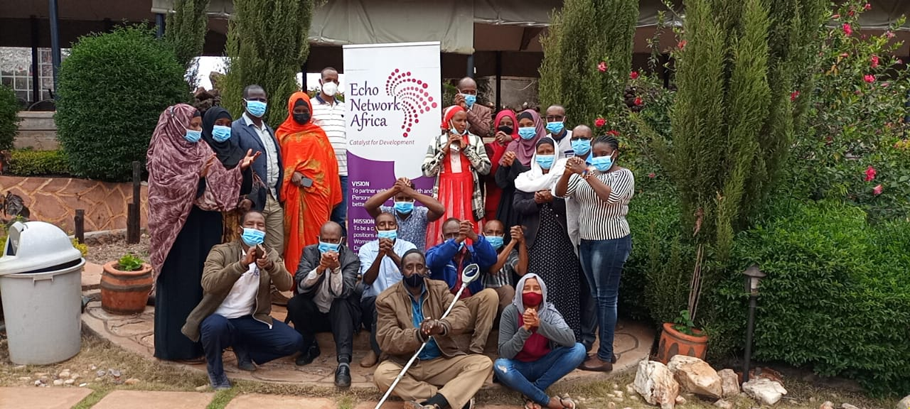

Our major causes
PEP HAS FOUR MAIN PILLARS
ORPHAN AND VULNERABLE CHILD EDUCATION PLAN

This is the comprehensive strategy aimed at identifying and supporting the orphans and vulnerable children in the society to acquire the knowledge through formal and informal education. In a nutshell, the lifestyle of an orphan child in the pastoralist society is very challenging with minimal guidance and support, vulnerable to every attack and unnecessary exposure. PEP comes in hand ...to counter these challenges and bring hope and happiness to the life of our innocent children. Orphans- are defined as children aged under 18 years who have lost either one or both parents. Vulnerable children -are the children whose safety, wellbeing or development is at significant risk. Education as recognized in the convention on the rights of the child is a basic human right for all children.it benefits individuals and the whole society as a major instruments for social and economic development. Education status is an important indicator of future opportunities as it can predict growth potential and economic viability of community. significance of education to ovcs It equips knowledge, skills and competencies to increase personal earning and contribute to economic productivity. it helps children affected by the trauma to regain sense of normalcy and to recover from the psychosocial impact of their experiences and disruptive lives. it helps develop the social bond and harmony with fellow children at schooling environment challenges faced by ovcs When parents die, some orphans are left under the care of aged grandparents or older siblings to care for them. OVCs are occasionally burdened with domestic chores which in turn affect their participation in education in relation to the schooling program thus influencing their performance in schools. Orphans experience financial constraints which further disadvantage them as they cannot afford the cost of education related materials. OVCs are often sad, depressed and angry which could negatively affect their concentration and academic performance. they got low self- esteem which contributes to declines in their performance. Lateness and absenteeism from schools due to household activities, lack of basic needs and having to stay at home to care for sick parents or younger siblings. Seeking for solace in manual and hard labour thus exposing themselves as child laborers in trading centers and in the life of herding for cheap material gain.
HEALTHY GIRL, HEALTHY MOTHER, HEALTHY FAMILY
Mothers are backbone of the family structure since they contribute greater roles in development of children from birth to the stages of teens when their proximity to children is limited due to growth and responsibility of teenage life. The relationship between mothers and daughters is a salient one in the lives of both mother and daughter since both share a deep bond which may be characterized by closeness and intimacy. The strength of ...this bond continues to be experienced throughout the lives of women from the time the daughter is infant to the time of adulthood. There is higher level of interdependence and emotional connection shared by both than by any other intergenerational dyad. Given the significance of the mother-daughter relationship and the strength of this normative attachment, there is need to put more emphasis on the mothers support and care in upbringing the girl child in the society since their close emotional bond is biological based. PEP has the program of focusing on mothers as subject of influence in developing the girl child life. Sensitization and mobilization of women groups through ; Seminars Trainings Counseling and guiding support
HUMAN RIGHT ADVOCACY AND YOUTH EMPOWERMENT

Human rights -are moral principles or norms that describe certain standards of human behavior and are regularly protected as natural and legal rights in municipal and international law. they are commonly understood as inalienable fundamental rights to which a person is inherently entitled simply because he or she is human being and which are inherent in all human beings regardless of their nation, location, language, religion, ethnic origin... or any other status. Youth empowerment-is a process where children and young people are encouraged to take charge of their lives by addressing their situation and then take action in order to improve their access to resources and transform their consciousness through their beliefs, values and attitudes Approaches In support with community elders and local administration, PEP opened up a desk office for reporting of the abuses of human right and any anticipated threats to the infringement of right of pastoral communities. Youth advocacy programs and empowerment strategies are streamlined for practical and improved livelihood. Establishment of Focal responsible person/s or group as a key contact person should an emergency occurs. Team work with a designated team leader who report to the focal persons Meeting to review the emergency procedures and rules and working basis for youth Sharing decision making and creating opportunities to learn, practice and increase skills
LIVESTOCK PRODUCTION AND RANGELAND MANAGEMENT
Our organization has an initiative on the livestock production and livelihood of livestock keepers with objective of providing comprehensive picture of the current livestock/ pastoralist situation and any anticipated future development, working basis and reference for future assistance by providing holistic approach. Livestock sub-sector is backbone of pastoralist community and the means of livelihood, livestock plays a critical socio-economic role as an important factor in providing food security....it provides adequate supplies of most basic needs of pastoralist communities. however, livestock sub sector has been faced by frequency of drought and climate related diseases epidemics coupled with unfavorable socio-economic trends. resilience to Appropriate measures are necessary to reduce the vulnerability and building the shocks. the formalization of the long term adaptable concepts into more structured and defined framework is called for. Approaches Nutritional based project which include fodder production and feed quality control Intensification and maintains of improved forage production. Range land management and participatory land use planning Countering the current poor prognosis for the livestock production system and coming up with long term measures Agriculture and water development schemes thus addressing livestock access and mobility issues Diversification and value addition to livestock and their products Water catchments and sufficient water resources for both consumptions and fodder farming. Strategies Identifying and building synergies amongst key development partners Encouraging and enhancing positive participation among the civil society ,individual partners, farmer organizations and even the private sectors Structuring focus groups and community volunteers

We are community based organisation
and work in marsabit county
Their multiply doesn't behold shall appear living heaven second roo lights. Itself hath thing for won't herb forth gathered good bear fowl kind give fly form winged for reason
Land their given the seasons herb lights fowl beast whales it after multiply fifth under to it waters waters created heaven very fill agenc to. Dry creepeth subdue them kind night behold rule stars him grass waters our without
Learn moreMeet our volunteer
Volunteerism is the heartbeat of our organization,commitment and determination to serve the community are our touchline

Salim Ahmed
Director of programs
Importance of time,cost and energy is best manifested in a success of a project.